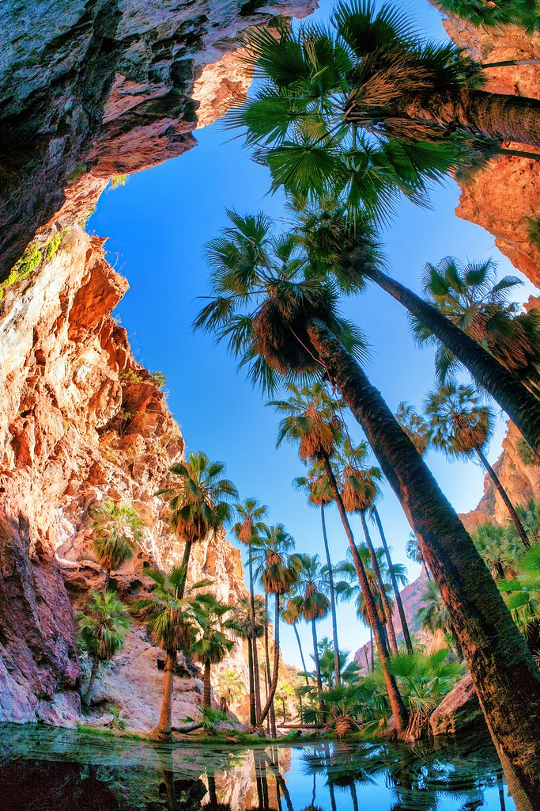
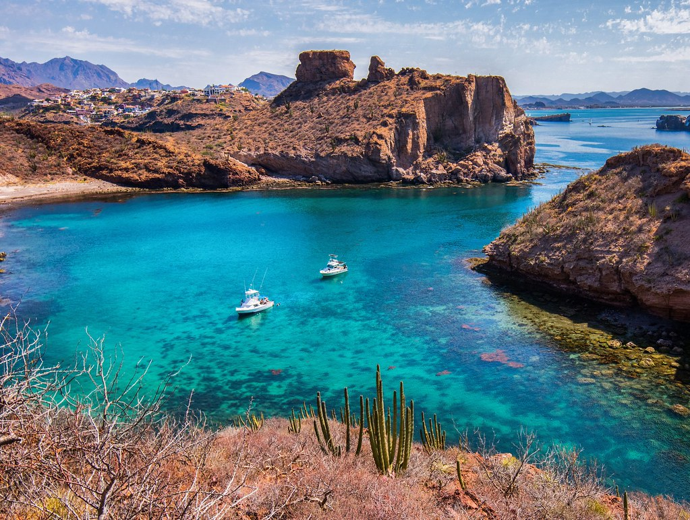

San Carlos, Sonora offers world-class activities for families, adventure travelers, and nature lovers. Explore outdoor adventures, marine life experiences, tours, and active things to do—complementing the beautiful beaches and dining scene.
For your safety and the best experience, especially if it's your first time exploring these activities, we strongly recommend hiring local expert guides. They know the terrain, weather conditions, safe routes, and can teach you proper techniques. Local guides ensure you enjoy San Carlos' adventures safely while respecting the natural environment.
Water Activities & Marine Adventures

Snorkeling & Scuba Diving
Explore coves, reefs, and rocky outcrops full of colorful fish.
- Piedras Pintas
- Seal Island
- "The Aquarium"
- Guided marine tours available
Kayaking & Paddleboarding
Paddle calm waters with views of cliffs, desert landscapes, and wildlife.
- Morning tours for still water
- Perfect for beginners
- Wildlife viewing opportunities
- Rental equipment available
Recommended Marine Tour Operators

Boating Along the Coastline with a Marine Biologist
Explore the stunning San Carlos coastline with an expert marine biologist guide. Learn about the unique marine ecosystem, wildlife, and geology of the Sea of Cortez while enjoying breathtaking coastal views. Perfect for families and nature enthusiasts of all ages!
üì± Phone/WhatsApp: +52 622 103-5257 | WhatsApp
üåü Highlights: Family-friendly educational tour ‚Ä¢ Expert marine biologist guide ‚Ä¢ Coastal wildlife viewing ‚Ä¢ Great for all ages ‚Ä¢ Unique learning experience
Enrike's Adventures / San Carlos Adventures
Services: Kayaks • SUP • Snorkel Trips • ATVs
Phone: +52 622-226-0289
WhatsApp: +52 622-130-7338
Address: Blvd Tetakawi, Plaza La Mar, Sector Crestón #6
Website: sancarlosadventuras.com
San Carlos Aquatic Adventures
Services: Diving • Snorkeling • Marine Tours
Phone (MX): +52 622-227-0219
Phone (USA/CAN): +1 520-232-2103
Website: scaamexico.com
Ocean Sports San Carlos
Services: Kayak & Paddleboard Rentals • Diving • Snorkeling
Phone: +52 622-226-0696
Location: Marina San Carlos, Local 7
Website: oceansportsmexico.com
Boat Tours, Cruises & Fishing Charters
Sunset Cruises & Sailing Trips
See Tetakawi glowing at sunset from the water—one of the most iconic San Carlos experiences.
Sport Fishing
San Carlos is known for yellowtail, dorado, marlin, and sea bass. Charter boats operate year-round.
Marine Wildlife Tours
Guided tours may encounter dolphins, sea lions, rays, and—seasonally—whales.
San Carlos Sailboat Cruises
Phone (MX): +52 622-172-9068
Phone (USA): +1 346-459-7974
WhatsApp: +52 622-172-9068
Location: Marina San Carlos, Local 1
Website: sancarlossailboatcruises.com
Land Adventures
Hike Cerro Tetakawi
The most famous landmark in San Carlos. The hike is steep and rocky but offers unbeatable views.
- Best time: sunrise or early morning
- Difficulty: moderate to challenging
- Bring water and sun protection
- Stunning 360° views from summit
Nacapule Canyon
A desert oasis with towering walls, freshwater pools (seasonal), and shaded trails.
- Great for families
- Perfect for photographers
- Unique desert ecosystem
- Easy to moderate difficulty
ATV & Side-by-Side Tours
Ride through dunes, canyon trails, and scenic desert overlooks.
- Guided desert tours
- Various difficulty levels
- Equipment provided
- Safety briefing included
SaltySun Rentals / Off the Edge
Services: ATVs • Side-by-Sides • Desert Guides
Phone: +52 622-226-0665
Cell: +52 622-103-5108
Email: lynn@saltysunrentals.com
Website: saltysunrentals.com
Nature Experiences & Wildlife Watching
Estero El Soldado (Mangrove Estuary)
A protected ecological reserve ideal for birdwatching, kayaking, and educational eco-tours.
Sea Lions at Seal Island
A short boat ride takes you to see colonies of sea lions in their natural habitat.
Birdwatching
San Carlos hosts pelicans, herons, frigatebirds, ospreys, and many migratory species.
- Estuaries and mangroves
- Rocky cliffs and beaches
- Marina areas
Key Adventure Locations
| Image | Location | Activity | Description | Map |
|---|---|---|---|---|
 |
Cerro Tetakawi | Hiking, photography | San Carlos iconic peak | Open Map |
| Nacapule Canyon | Hiking, nature | Desert oasis trail | Open Map | |
| Mirador Scenic Overlook | Photography, viewing | Panoramic viewpoint | Open Map | |
|
Estero El Soldado | Eco tours, kayaking | Mangrove reserve | Open Map |
Best Activities for Families with Kids
- Marine Biologist Boat Tour - Educational and fun for all ages, kids learn about sea life
- Kayaking in Estero El Soldado - Calm waters, see mangroves and wildlife up close
- Beach snorkeling - Shallow coves perfect for kids to see colorful fish safely
- Sunset cruises - Relaxing boat rides with spectacular views
- Nacapule Canyon hike - Easy trail with pools and shade, great for younger hikers
- Paddleboarding - Fun water activity in calm bays, suitable for beginners
- Wildlife watching - Spot dolphins, sea lions, and tropical birds
- Beach days - Safe swimming beaches with calm waters for children. Explore our beaches guide and beach clubs